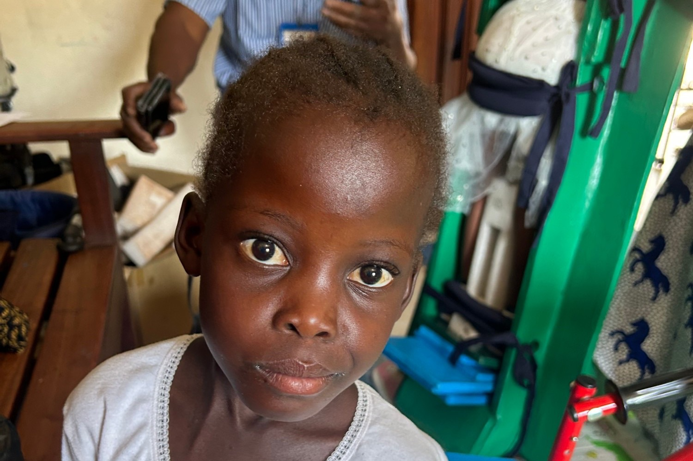
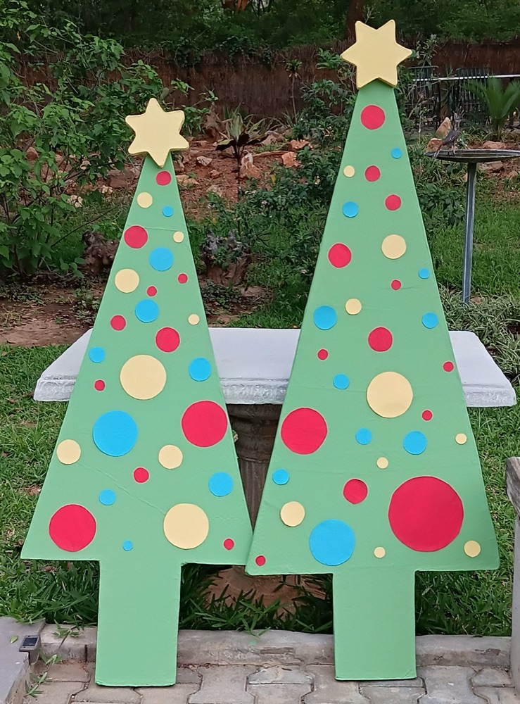
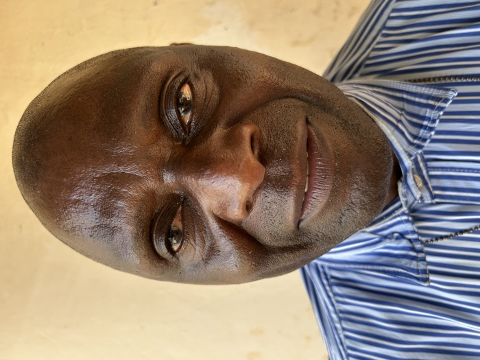
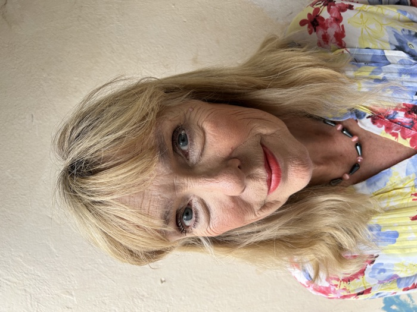
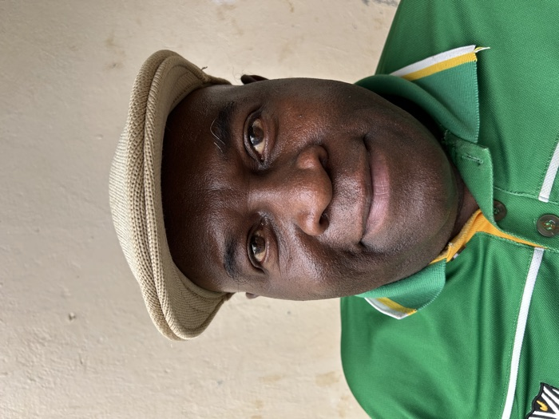
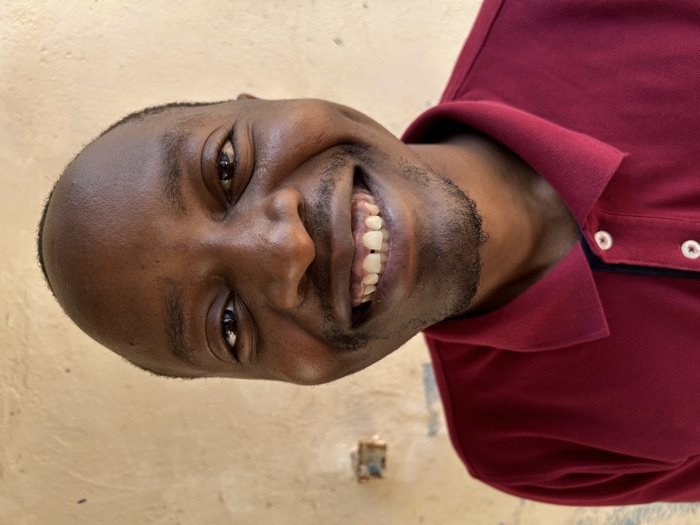
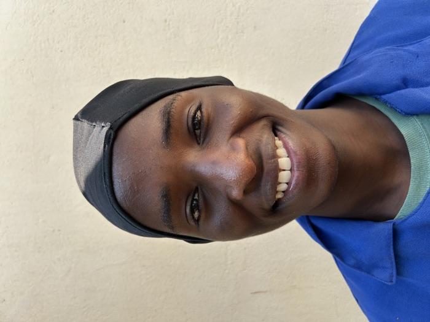
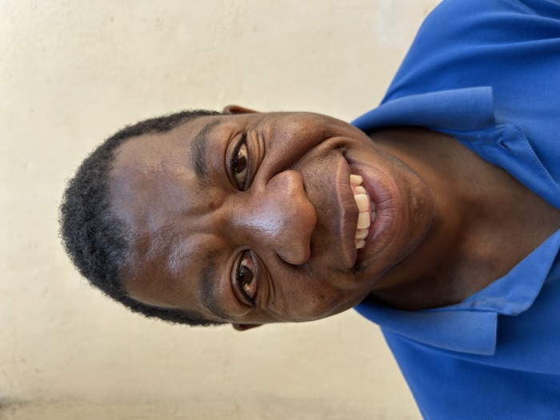
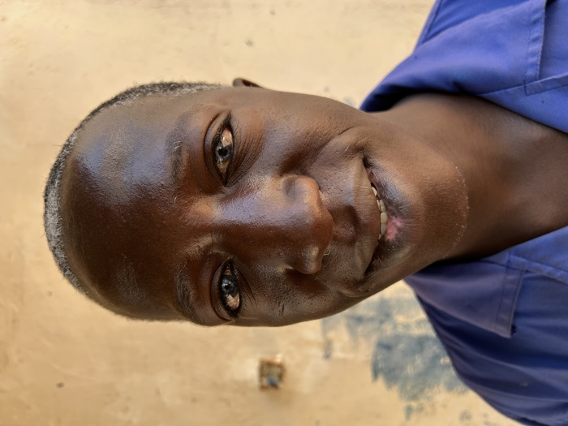
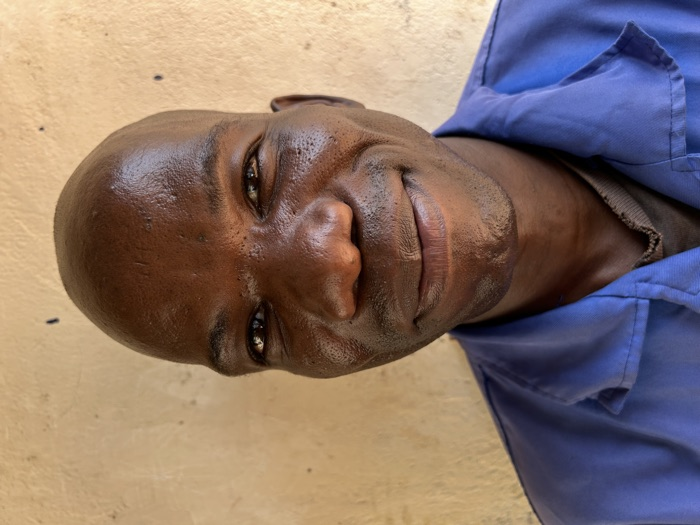

Measuring
Every child is measured for their chair, standing frame or walking frame at our clinic, held each Wednesday. We allow for growth by adding to measurements and fitting removable footrests that are taken away as the child grows.
Lusaka, Zambia · Est. 1990
APTERS creates affordable, custom-made chairs, standing frames and walking frames for children with neurological or physical disabilities, while creating paid work for adults with disabilities and mothers of disabled children.

About us
APTERS (Appropriate Paper Technology) is a Lusaka-based non-profit organization established in 1990. We create low-cost, custom-made mobility and assistive devices out of recycled paper and cardboard.
Our core mission is to provide affordable mobility aids for children with neurological or physical disabilities, such as cerebral palsy, spina bifida or birth injuries, while offering paid employment and economic empowerment to adults with disabilities and mothers of disabled children.
Our workshop is at the University Teaching Hospital (UTH) in Lusaka, with an additional craft presence around the Pa Mpofu craft market in Bauleni.
Kenneth Habaalu, our Executive Director and founder, is recognised by BBC News as one of Africa's leading disability innovators.
Recycled paper, cardboard, flour and glue. The result is lightweight, biodegradable equipment.

What we do
Every child is measured for their chair, standing frame or walking frame at our clinic, held each Wednesday. We allow for growth by adding to measurements and fitting removable footrests that are taken away as the child grows.
Measurements are transferred to strong cardboard board. A template is cut and glued together to form the basic shape, then dried, usually outside in the sun.
Three layers of recycled white paper, followed by a final layer of brown paper, add strength and leave a smooth surface for painting.
Equipment is painted in APTERS standard blue. Special colours and decoration are possible on request.
Children are strapped in for the best position and safety. Parents are taught how to position the child and fasten the straps, then practise under supervision before going home.

Products & services
Special chairs, standing frames and walking frames. Chairs and standing frames are the most in demand.
Sponsor one →Wedges and rollers for therapy exercises.
Sponsor one →Handmade items such as laptop covers and crafts. Every purchase helps subsidise units for families in need.
See the crafts →Need the device list for a child, a size guide or a price list? Contact us.

Crafts & shop
Our paper crafts are made by the same team that builds the mobility devices. Proceeds help subsidise equipment for families who cannot pay.
Ask about craftsOur team
Our team makes every device by hand, from cutting and pasting to painting and hand-over.

Executive Director and founder
Founded APTERS. Recognised by BBC News as one of Africa's leading disability innovators. Often teaches in schools about disability and inclusion.

Chairperson, APTERS Support Group
A former occupational therapist. Gives advice on disabilities, helps with administration and banking, and organises fundraising and craft markets.

Deputy Director
Creates crafts and special devices, checks the quality and safety of every device before it is issued, and talks with parents about their contribution.

Production coordinator and website
Coordinates every step of production and supports Kenneth and Karen with administration. Looks after this website.

Seamstress and cook
Sews the straps for devices and makes textile crafts for the shop and craft markets. Also cooks for the team.

Covering and painting
Covers devices with paper and paints them. Makes crafts such as piggy banks and toy boxes.

Pasting and painting
Does the pasting and paints devices and crafts. Makes rugs and doormats that are sold at craft markets.

Cutting and design
The youngest of the team. Cuts the cardboard templates and sometimes designs new pieces.

Glue, pasting and covering
Prepares and cooks the glue, then pastes and covers items with white and brown paper.

Covering and painting
Covers items with white and brown paper and paints them.

Pasting
Puts the white and brown paper layers together on the devices.

Painting, transport and markets
Paints devices, helps with transport and sets up APTERS stands at craft markets. A musician and singer.

Events & education
We run events for children and adults: bush skills days, mountain-biking in the bush, and children's treasure hunts for occasions such as Easter and Halloween. We also run fundraising quiz nights.
Our director, Kenneth Habaalu, visits schools to talk about disability and inclusion. Our team has also trained people from partner organisations to measure and fit devices, so families far from Lusaka do not need to travel for measurements.
Would you like APTERS to present its work to your school, organisation or community? Contact us.
Support us
90% of parents cannot afford the device their child needs. Your sponsorship pays for one. Each donor receives a certificate with the child's name.
KW 850
The most needed device.
KW 1,200
KW 1,750
KW 1,500
KW 1,500
Used A4 paper, cardboard boxes, old newspapers, shredded paper, clothing and bedding for babies, children and women, and paint, glue and flour.
Help at our clinics and craft markets, make or decorate devices and crafts, collect donations, or support our IT needs.
Organise a treasure hunt, quiz night, book sale, sponsored walk, braai or tea party in support of APTERS.
Use our bank details below or contact us.
Standard Chartered House, Stand 4642, corner of Mwaimwena Road and Addis Ababa Drive, P.O. Box 32238, Lusaka, Zambia
Recognition
APTERS has received many awards from various institutions for its work.

Partners & friends
We thank all our partners and friends for their interest and support.
Contact & connect
Looking for a device for a child, want to donate materials, or want to volunteer or collaborate? Let us know and we will share the right next steps.